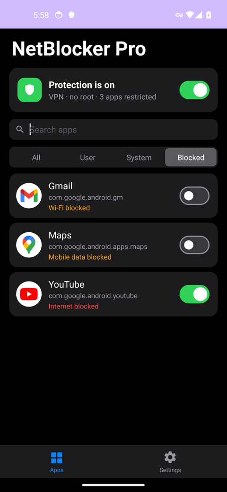
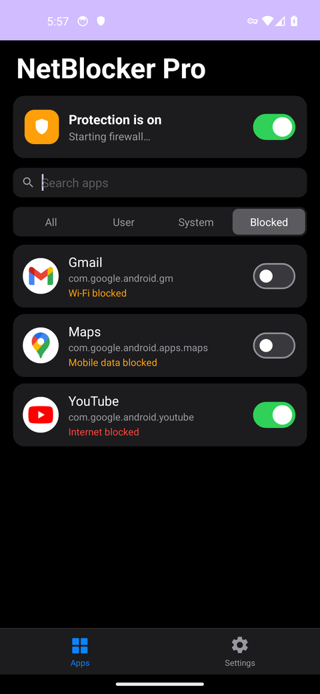
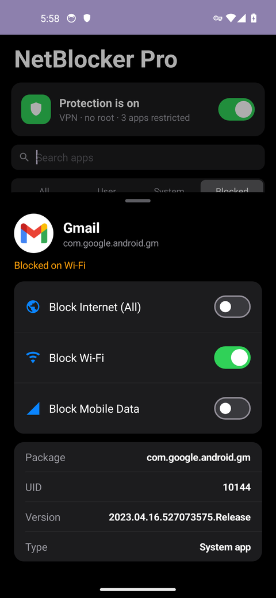
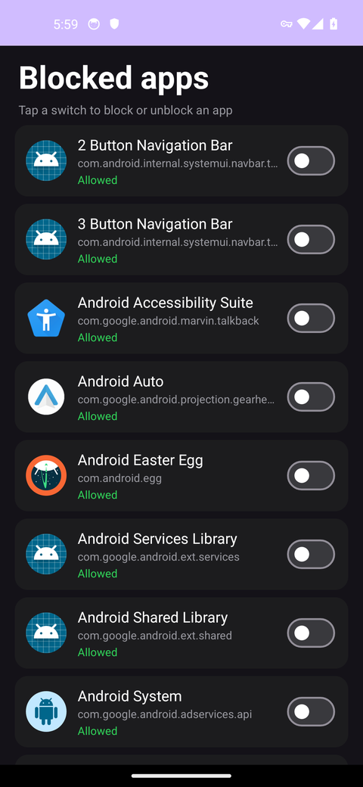
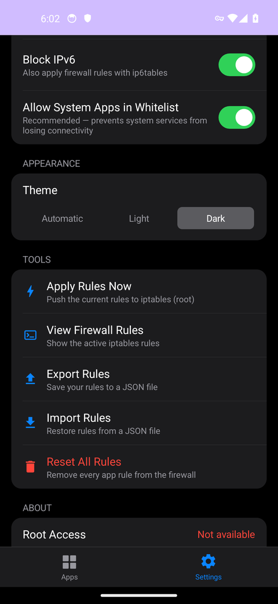
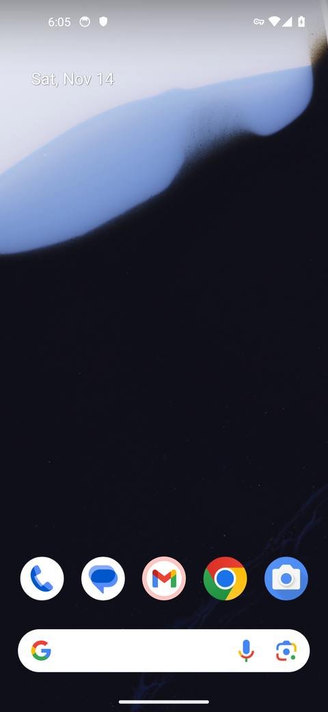

Block internet, Wi-Fi or mobile data for any app on Android — with or without root. A per-app firewall that actually blocks, without VPN servers, ads or tracking.
One tap to cut an app off the network — entirely, or per network type.
Tap a switch and the app instantly loses all connectivity — enforced at the system level, not just background data.
Keep an app off Wi-Fi while letting it use mobile data — or the other way around. Independent per-app network rules.
Stop data-hungry apps from eating your mobile plan while they stay usable at home on Wi-Fi.
Block the apps you pick — or flip it around and allow only the apps you trust, blocking everything else.
Automatic, light and dark themes with a true iOS palette, grouped lists and native-feeling switches.
Export your rules to a JSON file and restore them on any device. Live iptables rule viewer included.
If you know AFWall+ or NetGuard — NetBlocker Pro combines both worlds automatically.
Per-UID rules pushed through su — the same technique as AFWall+ and DroidWall.
A tunnel used purely as a filter — the NetGuard idea, done lighter.
Clean, fast and familiar — an interface that feels at home on Android.






Two home screen widgets and a Quick Settings tile — no app opening required.
Resizable — the bigger it gets, the more apps it shows.
A tiny green/gray shield — one tap, protection flips. Plus a Quick Settings tile for the notification shade.
Everyday reasons people install a per-app firewall.
Stop background apps from silently eating your mobile plan — block data per app while keeping Wi-Fi free.
Cut social apps off the internet when you want quiet — flip it back with the widget in the morning.
Keep distracting apps offline during work or study sessions without uninstalling anything.
Stop apps from phoning home, block telemetry apps and trackers from reaching their servers.
Restrict which apps your kids can use online — simple switches instead of complicated parental suites.
Apps that can't reach the network stop syncing, retrying and waking the device — battery life improves too.
Everything people usually ask before installing a firewall.
Install NetBlocker Pro, turn Protection on, and tap the switch next to any app — the app instantly loses internet. Long-press the app to block only Wi-Fi or only mobile data instead.
Yes. On unrooted phones NetBlocker Pro uses a local VPN as a per-app filter: allowed apps bypass the tunnel completely, blocked apps' packets are discarded inside it. No VPN server, no traffic forwarding, no data leaves the device.
Yes — each app has independent Block Wi-Fi and Block Mobile Data switches in its options sheet, plus a master Block Internet switch.
It combines both approaches: on rooted devices it uses AFWall+-style iptables rules; on unrooted devices a NetGuard-style local VPN filter — plus widgets, a Quick Settings tile, backup/restore and an iOS-style UI.
The root engine is pure kernel rules (no cost at all). The VPN engine has a small overhead comparable to other VPN firewalls — and blocking apps often saves battery because they stop syncing and retrying.
Completely free, open source under the MIT license, with no ads and no tracking. The full source code is on GitHub.
Android 8.0 (Oreo) or newer. Root is optional — Automatic mode detects your device and picks the best engine.
Three steps and your apps obey you.
Grab the signed APK from GitHub Releases (2.6 MB, Android 8.0+).
Flip the switch — grant root or accept the one-time VPN consent. The status card turns green.
Tap switches in the app, on the widget, or from the Quick Settings tile.
Free · Open source · No ads · No tracking · Works on every Android 8.0+ device